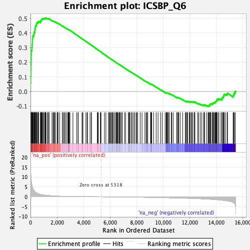
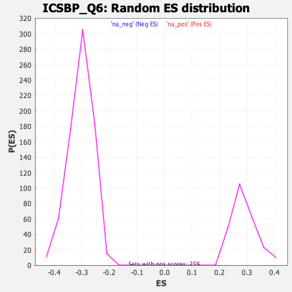

| | | Dataset | DE_genes |
| Phenotype | NoPhenotypeAvailable |
| Upregulated in class | na_pos |
| GeneSet | ICSBP_Q6 |
| Enrichment Score (ES) | 0.5026722 |
| Normalized Enrichment Score (NES) | 1.7380832 |
| Nominal p-value | 0.0 |
| FDR q-value | 0.19755636 |
| FWER p-Value | 0.786 |
Table: GSEA Results Summary

Fig 1: Enrichment plot: ICSBP_Q6
Profile of the Running ES Score & Positions of GeneSet Members on the Rank Ordered List
| PROBE | GENE SYMBOL | GENE_TITLE | RANK IN GENE LIST | RANK METRIC SCORE | RUNNING ES | CORE ENRICHMENT | | 1 | P2RY13 | | | 6 | 15.221 | 0.0584 | Yes |
| 2 | DAPP1 | | | 21 | 11.860 | 0.1033 | Yes |
| 3 | IFIT3 | | | 28 | 10.985 | 0.1453 | Yes |
| 4 | SP140 | | | 31 | 10.401 | 0.1854 | Yes |
| 5 | ISG15 | | | 44 | 9.032 | 0.2195 | Yes |
| 6 | TFEC | | | 56 | 8.248 | 0.2506 | Yes |
| 7 | TNFSF13B | | | 63 | 7.768 | 0.2802 | Yes |
| 8 | ZBP1 | | | 106 | 5.971 | 0.3005 | Yes |
| 9 | MAP2K6 | | | 127 | 5.478 | 0.3204 | Yes |
| 10 | IDO1 | | | 145 | 5.010 | 0.3386 | Yes |
| 11 | IL27 | | | 151 | 4.912 | 0.3572 | Yes |
| 12 | SP110 | | | 160 | 4.657 | 0.3747 | Yes |
| 13 | CXCL16 | | | 207 | 3.734 | 0.3861 | Yes |
| 14 | ARL5B | | | 263 | 3.112 | 0.3945 | Yes |
| 15 | IFI44 | | | 274 | 3.016 | 0.4055 | Yes |
| 16 | IFIH1 | | | 323 | 2.624 | 0.4125 | Yes |
| 17 | XRN1 | | | 327 | 2.585 | 0.4223 | Yes |
| 18 | TLR7 | | | 345 | 2.479 | 0.4308 | Yes |
| 19 | PARP9 | | | 361 | 2.390 | 0.4390 | Yes |
| 20 | CBX4 | | | 370 | 2.343 | 0.4475 | Yes |
| 21 | PIGR | | | 417 | 2.093 | 0.4526 | Yes |
| 22 | CTSS | | | 450 | 1.936 | 0.4580 | Yes |
| 23 | SOCS1 | | | 462 | 1.885 | 0.4645 | Yes |
| 24 | LY86 | | | 488 | 1.804 | 0.4699 | Yes |
| 25 | B2M | | | 558 | 1.566 | 0.4714 | Yes |
| 26 | IL18BP | | | 563 | 1.553 | 0.4771 | Yes |
| 27 | BCL11A | | | 623 | 1.420 | 0.4788 | Yes |
| 28 | COL4A1 | | | 749 | 1.195 | 0.4752 | Yes |
| 29 | LY75 | | | 769 | 1.161 | 0.4784 | Yes |
| 30 | AIF1 | | | 771 | 1.159 | 0.4828 | Yes |
| 31 | DTX3L | | | 774 | 1.153 | 0.4871 | Yes |
| 32 | RIPK2 | | | 817 | 1.084 | 0.4886 | Yes |
| 33 | FMR1 | | | 838 | 1.061 | 0.4914 | Yes |
| 34 | PSMB9 | | | 852 | 1.026 | 0.4945 | Yes |
| 35 | SIX1 | | | 879 | 1.001 | 0.4966 | Yes |
| 36 | EPN1 | | | 935 | 0.940 | 0.4967 | Yes |
| 37 | LYSMD2 | | | 993 | 0.866 | 0.4963 | Yes |
| 38 | PARP12 | | | 998 | 0.863 | 0.4993 | Yes |
| 39 | ADAM8 | | | 1080 | 0.771 | 0.4970 | Yes |
| 40 | ASCL2 | | | 1088 | 0.765 | 0.4995 | Yes |
| 41 | ZBTB33 | | | 1104 | 0.751 | 0.5014 | Yes |
| 42 | ALDH1A1 | | | 1143 | 0.727 | 0.5017 | Yes |
| 43 | MOV10 | | | 1171 | 0.699 | 0.5027 | Yes |
| 44 | CYB5B | | | 1280 | 0.623 | 0.4980 | No |
| 45 | GATA6 | | | 1334 | 0.597 | 0.4968 | No |
| 46 | PIGV | | | 1337 | 0.595 | 0.4990 | No |
| 47 | ADAR | | | 1411 | 0.563 | 0.4964 | No |
| 48 | TNFRSF17 | | | 1620 | 0.465 | 0.4845 | No |
| 49 | ESR1 | | | 1704 | 0.430 | 0.4808 | No |
| 50 | KYNU | | | 1739 | 0.412 | 0.4801 | No |
| 51 | RBCK1 | | | 1801 | 0.390 | 0.4776 | No |
| 52 | NFKB1 | | | 1815 | 0.385 | 0.4783 | No |
| 53 | IFI35 | | | 1905 | 0.353 | 0.4738 | No |
| 54 | BATF2 | | | 2017 | 0.320 | 0.4678 | No |
| 55 | EIF5A | | | 2067 | 0.305 | 0.4657 | No |
| 56 | HMCN1 | | | 2075 | 0.304 | 0.4664 | No |
| 57 | TOR1AIP1 | | | 2200 | 0.266 | 0.4593 | No |
| 58 | KCNMB3 | | | 2403 | 0.226 | 0.4470 | No |
| 59 | PSMA3 | | | 2405 | 0.226 | 0.4478 | No |
| 60 | R3HDM2 | | | 2505 | 0.206 | 0.4421 | No |
| 61 | C12orf4 | | | 2560 | 0.198 | 0.4393 | No |
| 62 | ZNF296 | | | 2644 | 0.183 | 0.4346 | No |
| 63 | HNRNPD | | | 2741 | 0.170 | 0.4289 | No |
| 64 | PHF6 | | | 2829 | 0.158 | 0.4239 | No |
| 65 | MSX1 | | | 2841 | 0.157 | 0.4237 | No |
| 66 | TAPBP | | | 2851 | 0.155 | 0.4237 | No |
| 67 | USP28 | | | 2884 | 0.151 | 0.4222 | No |
| 68 | PCDHGC3 | | | 2918 | 0.147 | 0.4206 | No |
| 69 | TSKU | | | 2920 | 0.147 | 0.4211 | No |
| 70 | COL4A2 | | | 2977 | 0.143 | 0.4180 | No |
| 71 | PPP2R5C | | | 3199 | 0.122 | 0.4040 | No |
| 72 | KCNJ1 | | | 3474 | 0.100 | 0.3864 | No |
| 73 | THBS1 | | | 3585 | 0.093 | 0.3796 | No |
| 74 | CITED4 | | | 3594 | 0.093 | 0.3794 | No |
| 75 | PRKD2 | | | 3881 | 0.077 | 0.3610 | No |
| 76 | TNFRSF19 | | | 3937 | 0.074 | 0.3576 | No |
| 77 | ARHGEF6 | | | 3952 | 0.073 | 0.3570 | No |
| 78 | ZEB2 | | | 4177 | 0.060 | 0.3426 | No |
| 79 | IL22RA1 | | | 4266 | 0.055 | 0.3370 | No |
| 80 | SLITRK6 | | | 4301 | 0.053 | 0.3350 | No |
| 81 | ATP11C | | | 4489 | 0.042 | 0.3229 | No |
| 82 | FGF9 | | | 4590 | 0.037 | 0.3165 | No |
| 83 | HAS3 | | | 4592 | 0.037 | 0.3165 | No |
| 84 | LGALS8 | | | 5037 | 0.014 | 0.2875 | No |
| 85 | NRG4 | | | 5075 | 0.012 | 0.2851 | No |
| 86 | LRP2 | | | 5116 | 0.010 | 0.2825 | No |
| 87 | ENTPD1 | | | 5268 | 0.003 | 0.2726 | No |
| 88 | USPL1 | | | 5297 | 0.001 | 0.2708 | No |
| 89 | NPAS3 | | | 5314 | 0.000 | 0.2698 | No |
| 90 | BBX | | | 5576 | -0.013 | 0.2527 | No |
| 91 | TRPM3 | | | 5685 | -0.020 | 0.2457 | No |
| 92 | TBX1 | | | 5876 | -0.030 | 0.2334 | No |
| 93 | CNTFR | | | 5935 | -0.035 | 0.2297 | No |
| 94 | CXCR4 | | | 5988 | -0.038 | 0.2264 | No |
| 95 | DNAH6 | | | 6048 | -0.042 | 0.2227 | No |
| 96 | LAMA3 | | | 6108 | -0.047 | 0.2190 | No |
| 97 | SKIDA1 | | | 6172 | -0.051 | 0.2151 | No |
| 98 | TWIST1 | | | 6205 | -0.053 | 0.2132 | No |
| 99 | CSAD | | | 6294 | -0.059 | 0.2077 | No |
| 100 | BST2 | | | 6315 | -0.060 | 0.2066 | No |
| 101 | DGKA | | | 6429 | -0.067 | 0.1994 | No |
| 102 | SYNCRIP | | | 6455 | -0.069 | 0.1981 | No |
| 103 | CDKN2C | | | 6490 | -0.072 | 0.1961 | No |
| 104 | PLP1 | | | 6544 | -0.075 | 0.1929 | No |
| 105 | DAGLA | | | 6570 | -0.077 | 0.1916 | No |
| 106 | CASK | | | 6636 | -0.083 | 0.1877 | No |
| 107 | USP18 | | | 6702 | -0.088 | 0.1837 | No |
| 108 | RAD51AP1 | | | 6717 | -0.089 | 0.1832 | No |
| 109 | SLC11A2 | | | 6767 | -0.093 | 0.1803 | No |
| 110 | ZFPM1 | | | 6855 | -0.099 | 0.1750 | No |
| 111 | TGIF1 | | | 6918 | -0.104 | 0.1713 | No |
| 112 | KLHL13 | | | 7088 | -0.117 | 0.1607 | No |
| 113 | HOXB7 | | | 7173 | -0.124 | 0.1557 | No |
| 114 | OSR2 | | | 7377 | -0.142 | 0.1429 | No |
| 115 | TFDP2 | | | 7424 | -0.147 | 0.1405 | No |
| 116 | BTAF1 | | | 7461 | -0.149 | 0.1387 | No |
| 117 | PPARGC1A | | | 7487 | -0.151 | 0.1376 | No |
| 118 | TCIRG1 | | | 7587 | -0.160 | 0.1318 | No |
| 119 | CCDC6 | | | 7594 | -0.161 | 0.1320 | No |
| 120 | MPDZ | | | 7671 | -0.168 | 0.1277 | No |
| 121 | LRRN3 | | | 7773 | -0.177 | 0.1217 | No |
| 122 | TSPAN2 | | | 7855 | -0.184 | 0.1171 | No |
| 123 | SATB2 | | | 7961 | -0.194 | 0.1110 | No |
| 124 | DLG2 | | | 8016 | -0.200 | 0.1082 | No |
| 125 | ELK4 | | | 8078 | -0.207 | 0.1050 | No |
| 126 | ZNF366 | | | 8270 | -0.226 | 0.0934 | No |
| 127 | UBR3 | | | 8407 | -0.240 | 0.0854 | No |
| 128 | WDPCP | | | 8624 | -0.264 | 0.0723 | No |
| 129 | TOP1 | | | 8718 | -0.276 | 0.0672 | No |
| 130 | HDAC4 | | | 8774 | -0.283 | 0.0647 | No |
| 131 | BANK1 | | | 8837 | -0.291 | 0.0618 | No |
| 132 | IKZF2 | | | 8840 | -0.291 | 0.0628 | No |
| 133 | TRMT112 | | | 9056 | -0.318 | 0.0499 | No |
| 134 | ST3GAL4 | | | 9057 | -0.318 | 0.0511 | No |
| 135 | NABP2 | | | 9118 | -0.325 | 0.0484 | No |
| 136 | TAPBPL | | | 9119 | -0.325 | 0.0497 | No |
| 137 | MED13 | | | 9131 | -0.326 | 0.0502 | No |
| 138 | DIO2 | | | 9277 | -0.345 | 0.0421 | No |
| 139 | HIVEP1 | | | 9472 | -0.369 | 0.0308 | No |
| 140 | PRDM16 | | | 9615 | -0.391 | 0.0230 | No |
| 141 | ZMYND15 | | | 9802 | -0.418 | 0.0124 | No |
| 142 | CHST1 | | | 9929 | -0.437 | 0.0058 | No |
| 143 | MAP3K11 | | | 10150 | -0.470 | -0.0068 | No |
| 144 | SIK3 | | | 10231 | -0.482 | -0.0102 | No |
| 145 | IRAK1 | | | 10271 | -0.487 | -0.0108 | No |
| 146 | MGAT4A | | | 10294 | -0.490 | -0.0104 | No |
| 147 | GRIPAP1 | | | 10328 | -0.495 | -0.0106 | No |
| 148 | RRBP1 | | | 10388 | -0.503 | -0.0126 | No |
| 149 | TEK | | | 10457 | -0.513 | -0.0150 | No |
| 150 | EREG | | | 10458 | -0.513 | -0.0131 | No |
| 151 | TCF15 | | | 10605 | -0.539 | -0.0206 | No |
| 152 | ASPA | | | 10654 | -0.546 | -0.0216 | No |
| 153 | WDR82 | | | 10756 | -0.561 | -0.0260 | No |
| 154 | PTK2 | | | 11036 | -0.604 | -0.0420 | No |
| 155 | CHD6 | | | 11051 | -0.606 | -0.0406 | No |
| 156 | FNBP1L | | | 11053 | -0.606 | -0.0383 | No |
| 157 | MAML3 | | | 11140 | -0.624 | -0.0415 | No |
| 158 | TNFSF15 | | | 11172 | -0.630 | -0.0411 | No |
| 159 | CPEB4 | | | 11281 | -0.653 | -0.0457 | No |
| 160 | PKP4 | | | 11469 | -0.692 | -0.0553 | No |
| 161 | LRMP | | | 11668 | -0.736 | -0.0654 | No |
| 162 | PRDX5 | | | 11722 | -0.745 | -0.0660 | No |
| 163 | SORBS1 | | | 11759 | -0.753 | -0.0655 | No |
| 164 | CDK6 | | | 11832 | -0.768 | -0.0672 | No |
| 165 | PURA | | | 11847 | -0.772 | -0.0651 | No |
| 166 | CYB561D1 | | | 11967 | -0.797 | -0.0699 | No |
| 167 | ARMCX6 | | | 12022 | -0.809 | -0.0703 | No |
| 168 | KDM2A | | | 12034 | -0.812 | -0.0679 | No |
| 169 | ENPP2 | | | 12132 | -0.837 | -0.0710 | No |
| 170 | FRY | | | 12174 | -0.849 | -0.0704 | No |
| 171 | GZMK | | | 12205 | -0.856 | -0.0691 | No |
| 172 | FUT8 | | | 12331 | -0.886 | -0.0738 | No |
| 173 | HOXA3 | | | 12342 | -0.888 | -0.0711 | No |
| 174 | PSMB8 | | | 12397 | -0.903 | -0.0711 | No |
| 175 | NIPBL | | | 12606 | -0.954 | -0.0811 | No |
| 176 | RAPGEF6 | | | 12682 | -0.974 | -0.0822 | No |
| 177 | ANGPTL4 | | | 12808 | -1.014 | -0.0865 | No |
| 178 | STAT6 | | | 12916 | -1.051 | -0.0894 | No |
| 179 | GSDMD | | | 13056 | -1.093 | -0.0943 | No |
| 180 | CABLES1 | | | 13075 | -1.098 | -0.0913 | No |
| 181 | ZBTB18 | | | 13136 | -1.115 | -0.0909 | No |
| 182 | SYNE2 | | | 13288 | -1.170 | -0.0963 | No |
| 183 | UBA7 | | | 13390 | -1.210 | -0.0982 | No |
| 184 | LURAP1L | | | 13435 | -1.225 | -0.0964 | No |
| 185 | RBM39 | | | 13462 | -1.238 | -0.0933 | No |
| 186 | PIK3R3 | | | 13529 | -1.264 | -0.0927 | No |
| 187 | HPCAL1 | | | 13539 | -1.270 | -0.0884 | No |
| 188 | ZNF407 | | | 13566 | -1.280 | -0.0852 | No |
| 189 | SCML1 | | | 13607 | -1.295 | -0.0828 | No |
| 190 | VGLL4 | | | 13714 | -1.339 | -0.0846 | No |
| 191 | ECM2 | | | 13739 | -1.354 | -0.0809 | No |
| 192 | ZER1 | | | 13763 | -1.364 | -0.0772 | No |
| 193 | MEIS2 | | | 13821 | -1.387 | -0.0756 | No |
| 194 | CASP7 | | | 13889 | -1.418 | -0.0745 | No |
| 195 | NDRG3 | | | 13933 | -1.438 | -0.0717 | No |
| 196 | ERBB2 | | | 13972 | -1.456 | -0.0686 | No |
| 197 | TAP1 | | | 13992 | -1.464 | -0.0642 | No |
| 198 | NPR3 | | | 14037 | -1.495 | -0.0613 | No |
| 199 | SLC15A3 | | | 14043 | -1.497 | -0.0558 | No |
| 200 | RCOR1 | | | 14071 | -1.514 | -0.0518 | No |
| 201 | SLC12A7 | | | 14178 | -1.590 | -0.0526 | No |
| 202 | MXI1 | | | 14201 | -1.603 | -0.0478 | No |
| 203 | CREBZF | | | 14357 | -1.692 | -0.0515 | No |
| 204 | EMP1 | | | 14445 | -1.749 | -0.0504 | No |
| 205 | ATP10A | | | 14449 | -1.752 | -0.0438 | No |
| 206 | DUSP10 | | | 14462 | -1.761 | -0.0378 | No |
| 207 | SOS1 | | | 14542 | -1.821 | -0.0360 | No |
| 208 | SEMA6D | | | 14560 | -1.839 | -0.0300 | No |
| 209 | FAM53B | | | 14577 | -1.851 | -0.0239 | No |
| 210 | CACNA1C | | | 14603 | -1.877 | -0.0183 | No |
| 211 | DDB2 | | | 14714 | -1.987 | -0.0178 | No |
| 212 | TUBB6 | | | 14829 | -2.090 | -0.0172 | No |
| 213 | USF1 | | | 14854 | -2.108 | -0.0106 | No |
| 214 | FES | | | 15274 | -2.856 | -0.0271 | No |
| 215 | ITPR1 | | | 15314 | -3.000 | -0.0180 | No |
| 216 | SREK1 | | | 15361 | -3.281 | -0.0084 | No |
| 217 | ITPR3 | | | 15436 | -4.017 | 0.0023 | No |
Table: GSEA details [plain text format]

Fig 2: ICSBP_Q6: Random ES distribution
Gene set null distribution of ES for ICSBP_Q6